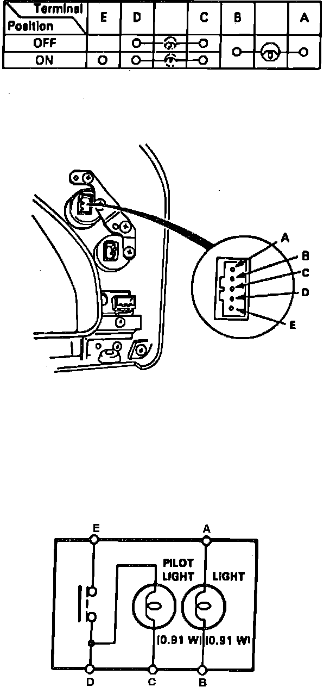
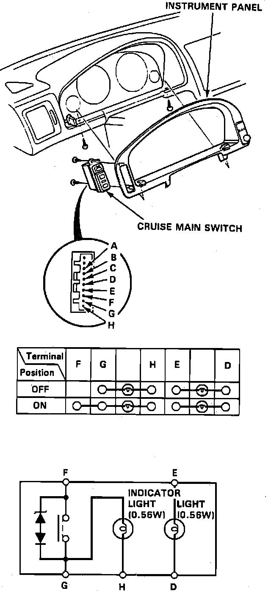
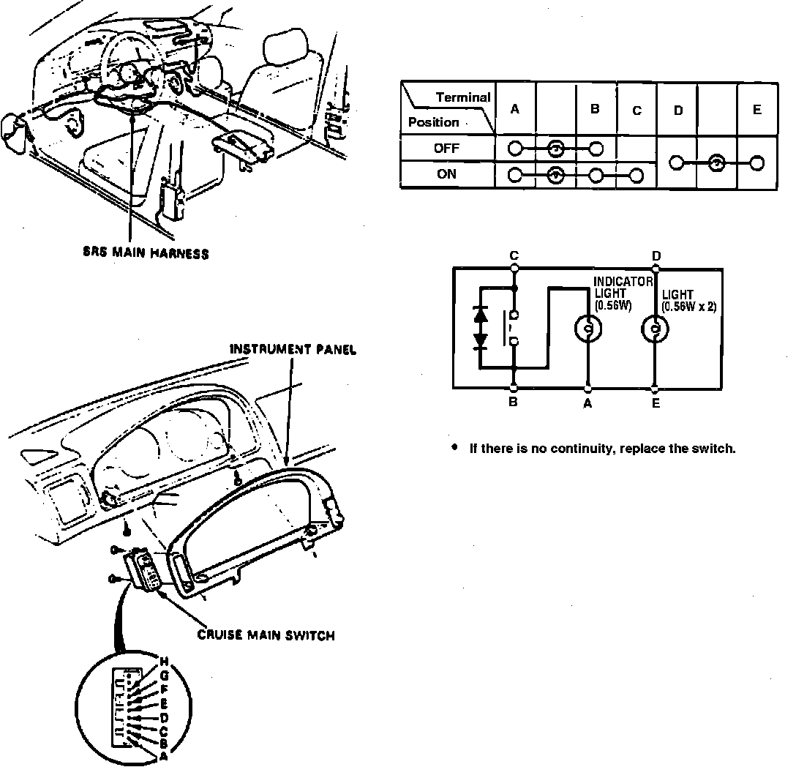

Cruise Control Main Switch Inspection
Fig. 16 Main Switch:

Fig. 17 Main Switch:

Fig. 18 Main Switch:

1. Remove instrument panel from dashboard. Check for continuity between terminals in each switch position as shown in Figs. 16 through 18.
2. Reverse procedure to install.